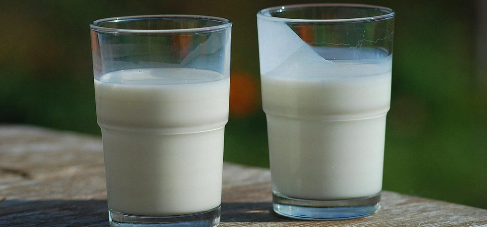

Что такое кефир .

Кефир – один из самых популярных кисломолочных продуктов, на долю которого приходится более 2/3 их производства. Слово «кефир» – турецкого происхождения: «кеф» в переводе с турецкого означает «здоровье».
Родина кефира – северный склон Кавказского хребта. Живущие в тех местах долгожители-горцы (осетины и карачаевцы) считали кефирные грибки священным даром самого Аллаха. Они настолько дорожили этой закваской, что никогда никому её не дарили и не продавали (даже соплеменникам) – горцы верили, что Аллах в такой случае лишит кефирные грибки их волшебной силы. Проблему решали так: хозяин закваски позволял её выкрасть тому, кто этого сильно жаждал, а потом уже брал деньги, но не за грибки, а за какой-то другой, чаще всего чисто символический товар. Даже выходившие замуж девушки получали закваску в приданое не просто так: они выкрадывали её у родителей, причём сценарий этой «ритуальной кражи» был разработан до мелочей.
Ещё в XIX веке горцы готовили кефир удивительным способом: заливали молоко в бурдюк, добавляли туда кефирные грибки, завязывали, выносили за порог дома и оставляли на солнце посреди ближайшей тропинки. Считалось, что пнуть лежащий бурдюк значит выразить уважение хозяевам дома, ведь постоянное встряхивание способствует более интенсивному брожению. В наше время горцы делают кефир в специальной глиняной посуде, которую ставят рядом с тёплой печью.
До начала XX века кефир в Центральной России не готовили – лишь изредка завозили с Кавказа и продавали по очень большой цене. В Москве кефирные грибки появились только в 1908 году, и то лишь благодаря счастливому случаю. Работницу московской молочной фабрики Ирину Сахарову, приехавшую на Кавказ за кефирными грибками, похитил богатый поставщик молочных продуктов из Кисловодска князь Байчаров. Не добившись её руки, он был привлечен к суду и смог откупиться лишь десятью фунтами кефирных грибков. Уже через несколько недель после суда кефир смогли попробовать пациенты Боткинской больницы. Именно в России была и запатентована технология производства кефира.
Настоящий кефир производитсяс применением кефирных грибков
Если познакомиться с кефиром ближе, становится ясно, что он – действительно удивительный и даже уникальный напиток. Ведь в отличие от других видов диетических продуктов, кефир производят с применением естественной закваски – кефирных грибков, которые представляют собой симбиоз (совместное существование организмов) различных микроорганизмов.
По данным некоторых исследователей в состав кефирных грибков входит до 22 видов микроорганизмов, основными из которых признаны молочнокислые стрептококки, в том числе ароматообразующие виды, молочнокислые палочки, уксуснокислые бактерии и дрожжи. В кефирных грибках эти микроорганизмы находятся в сложных симбиотических взаимоотношениях, которые проявляются в том, что в благоприятных условиях развития соотношение между отдельными видами сохраняется с удивительным постоянством. Именно эта особенность закваски является причиной того, что кефир, выработанный на кефирных грибках, имеет неизменяющийся типичный вкус.
Попытки выделить и изолировать микроорганизмы из состава кефирных грибков и в дальнейшем использовать их для приготовления искусственной закваски не увенчались успехом. В таких заквасках очень быстро менялось соотношение микроорганизмов, наблюдалось преимущественное развитие какого-либо одного вида, т.е. закваска вырождалась, кефир в результате этих изменений терял типичные свойства.
После внесения кефирных грибков в молоке начинается не только молочнокислое, но и спиртовое брожение и при определенных условиях накапливается значительное количество спирта. Сочетание молочной кислоты, образующейся при молочнокислом брожении, углекислоты и спирта обуславливает специфический освежающий, слегка острый вкус и сметанообразную газированную или пенистую консистенцию продуктов этой группы.
Пищевая и энергетическая ценность, состав кефираХимический состав кефира 3,2%-ной жирности: вода – 88,3; белки – 2,8; жиры – 3,2; углеводы – 4,1; органические кислоты – 0,9; золы – 0,7%. Витамины А, бета-каротин, В1, В2, РР, С.
Калорийность кефира: кефир жирный (3,2% жирности) – 56 ккал; кефир нежирный (0,1% жирности) – 28 ккал.
Полезные свойства кефираКефир обладает всеми полезными свойствами кисломолочных напитков и относится к диетическим кисломолочным продуктам. Основные питательные вещества кефира присутствуют в легкоусвояемой форме, поэтому особенно ценен этот продукт для детей, пожилых и выздоравливающих после болезни людей. Лечебные свойства кефира хорошо известны в народной медицине и объясняются накоплением антибиотических веществ (низина и других, вырабатываемых дрожжевыми клетками).
Главное преимущество кефира – возможность оказывать пробиотическое действие, т.е. благоприятно влиять на состав микробов кишечника: кефир подавляет рост болезнетворных микроорганизмов, таким образом, он способствует предотвращению развития кишечных инфекций и помогает при наличии дисбактериоза.
Кроме того, употребление кефира благотворно сказывается на защитных силах организма: он повышает иммунитет. Кефир рекомендуют применять для восстановления сил при малокровии, при некоторых болезнях желудочно-кишечного тракта.
Также, отмечено позитивное действие кефира на состояние людей, страдающих от синдрома хронической усталости. При нарушениях сна, невротических состояниях в качестве одного из непременных компонентов рациона пациентов опять же рекомендуется кефир, поскольку помимо всего прочего он обладает успокаивающим действием на нервно-психическую сферу.
Виды кефира
В зависимости от применяемого молока и массовой доли жира кефир вырабатывают:
- жирный – с содержанием жира 1%, 2,5% и 3,2%;
- нежирный – из обезжиренного молока;
- кефир жирный с добавлением витамина С;
- кефир нежирный с добавлением витамина С;
- Таллинский – с массовой долей жира 1%;
- Таллинский нежирный ;
- Фруктовый жирный – с массовой долей жира 1% и 2,5%, изготовляют из нормализованного молока с введением плодовых и ягодных сиропов;
- Фруктовый нежирный;
- особый – из смеси молока цельного и обезжиренного с добавлением сухого казеината натрия;
- кефир 6% жирности – из гомогенизированной смеси молока и сливок;
- айран – кисломолочный напиток народов Кавказа – Кабарды, Тетерды и Карачая, напоминает кефир, но имеет свои особенности.
Айран вырабатывается из цельного и обезжиренного молока – коровьего, овечьего или козьего. Закваска для продукта состоит из молочнокислых стрептококков, палочек, дрожжей. Айран в отличие от кефира обладает более тонким, мягким и нежным кисломолочным вкусом и ароматом, имеет нежные хлопья казеина. При более низкой кислотности и незначительном содержании спирта (0,1%) по сравнению с кефиром имеет более высокий процесс пентонизированных белков, обладает высокими диетическими и терапевтическими свойствами.
Параметры выбора кефира
- Кислотность кефира.
Качество готового кефира зависит от качества молока, из которого его изготавливали, а вкус — от кислотности. Чем выше кислотность кефира по шкале Термера (от 85 до 120 пунктов), тем вкуснее напиток.
- Дата выпуска – степень зрелости кефира
По параметрам кислотности, накопления углекислоты и спирта, а также по степени набухания белков кефир подразделяется на три степени зрелости:
- слабый (односуточный);
- средний (двухсуточный);
- крепкий (трехсуточный).
Слабость и крепость кефира — показатели накопления кефиром углекислоты и спирта по мере созревания продукта. Причем на кишечник действуют разные виды кефира прямо противоположно: слабый кефир оказывает слабительное действие, тогда как крепкий кефир, наоборот, крепит. Это происходит из-за того, что чем крепче кефир — тем сильнее он стимулирует выработку пищеварительных соков в желудке и кишечнике и активнее регулирует процессы его очищения.
Имейте в виду, что крепкий трехсуточный кефир полезен далеко не всем – например, он может стать причиной серьезных неприятностей у людей, страдающих язвенной болезнью, гастритом или панкреатитом.
- Жирность кефира
Чем жирнее было молоко, из которого делают кефир, тем более жирным получится готовый напиток. Средняя жирность кефира – 2,5 процента. Людям, страдающим от отеков, возникших вследствие заболеваний почек, лучше отдать предпочтение нежирному кефиру. Кефир с малым процентным содержанием жира помимо прочего, обладает еще и мочегонным свойством.
- Консистенция кефира
При покупке нужно обратить внимание на консистенцию кефира — кефир должен быть однородным. Если появляются хлопья и комочки, значит, его неправильно хранили до продажи, или срок годности истек.
Прежде в торговую сеть поступал кефир плотной консистенции, с трудом выливающийся из бутылки. В настоящее время выпускают кефир более жидкой консистенции. И тот, и другой не отличаются по своему химическому составу. Разница лишь в способе приготовления. Если раньше кефир сквашивали непосредственно в бутылках, то теперь в больших резервуарах. Кроме того, когда кефир уже готов, его тщательно перемешивают и только после этого направляют на розлив в бутылки, пакеты или мешочки.
- Наличие специальных добавок
В магазинах кроме обычного кефира продают биокефир, который подходит даже тем людям, у кого аллергия на коровье молоко.
Биокефир от обычного кефира отличается тем, что в него добавлены специальные бифидобактерии, которые помогают организму усваивать молоко. Бифидобактерии также улучшают работу желудочно-кишечного тракта, тонизируют нервную и сердечно-сосудистую системы, снижают риск онкологических заболеваний, а также нейтрализуют побочные действия антибиотиков.
Также в кефир могут добавляться различные фруктовые наполнители. Но вот специалисты считают, что продукт с фруктовыми добавками кефиром называться не может. Если он приготовлен на основе кефира с фруктовыми ингредиентами или с применением ароматизаторов, то должен называться «кефирный напиток».
Ирина УГРИНЧУК